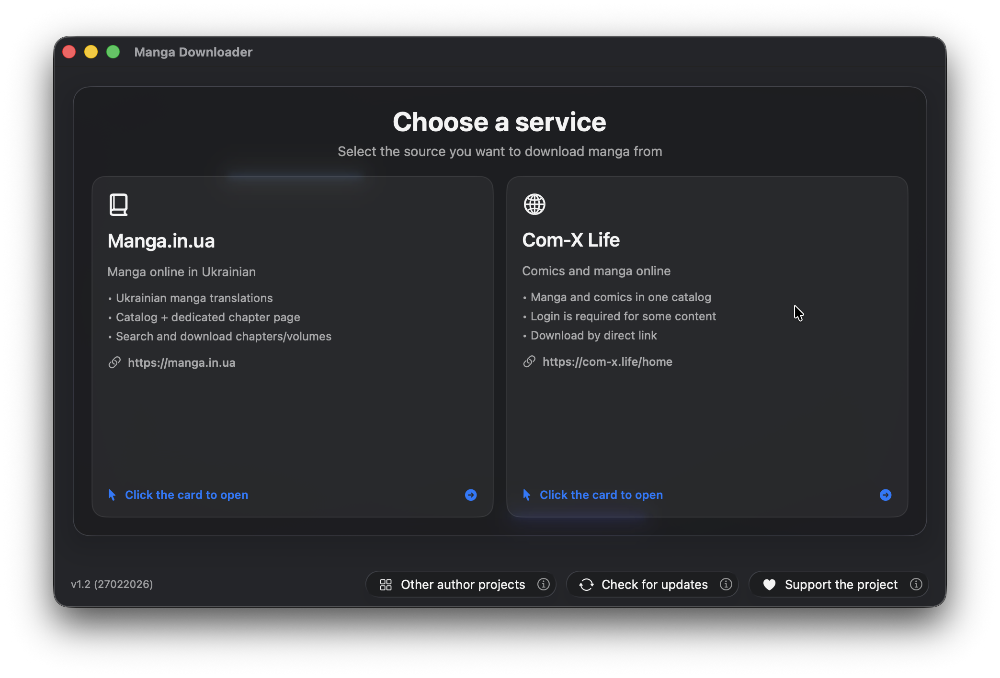
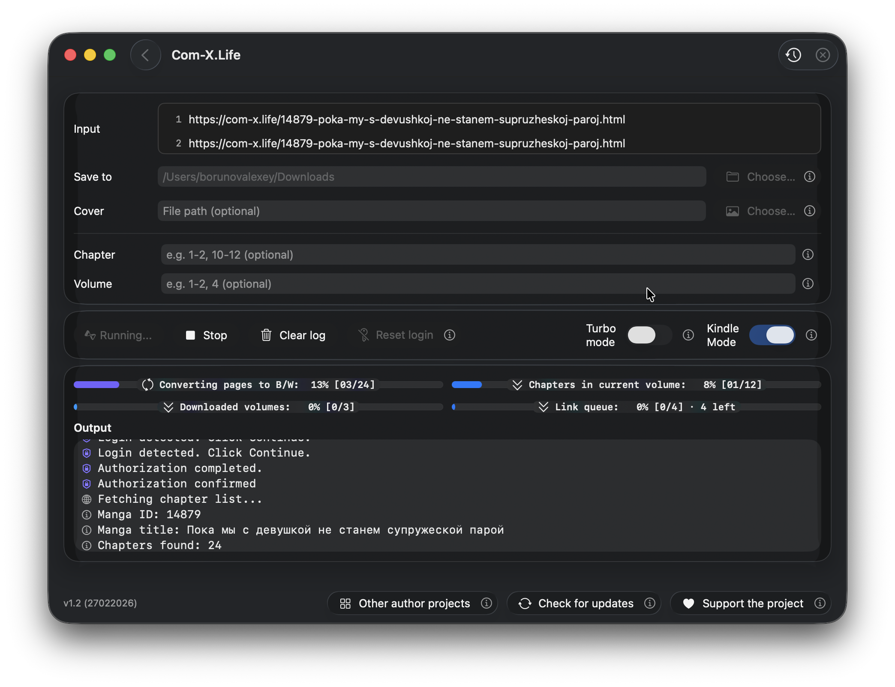

Manga Downloader (macOS) - Documentation
Version: 2.0.1 | Platform: native SwiftUI app for macOS
What It Is
Manga Downloader is a macOS app that helps you download manga from supported websites and convert it into EPUB files optimized for e-ink reading.
Supported sources are manga/in/ua (manga.in.ua) and com-x.life (com-x.life), and the interface is available in Ukrainian, English, and Russian.
Screenshots



Features
- Pick one of two sources: manga/in/ua or com-x.life.
- Paste one link or a queue of links (comma-separated or one per line).
- In manga/in/ua mode, the app auto-switches: URL for download, plain text for search.
- Filter chapters/volumes with range syntax:
1-2,1-2,4,10-12. - Add an optional custom EPUB cover image.
- Get one EPUB per volume.
- Follow progress with real-time localized logs, clickable links, and progress bars.
- Start/Stop anytime with proper cancellation and process cleanup.
- Use Turbo mode for higher performance (with warning and saved state).
- See completion in both app alert and macOS system notification.
Supported Services
manga/in/ua
- Search by text query, parse result cards, and show readable results in logs.
- Download by URL: resolve links, fetch chapters, apply filters, download images, then build CBZ and EPUB.
- EPUB page order follows the app's manga-style reading logic.
com-x.life
- Download by direct URL with metadata and chapter parsing from site payloads.
- Download chapter archives, extract images, then run conversion and packaging.
- If login is required, use in-app WebView auth with cookie persistence and retry flow.
- Includes robust parsing for payload and chapter ID field variants.
How It Works (Step-by-Step)
- Open the app and select a source service.
- Enter URL(s), or enter search text for manga/in/ua.
- Optionally set chapter/volume filters and choose output location.
- Optionally select a custom cover image.
- Start processing. For each chapter/page set, the app runs this pipeline:
- Download original image/archive.
- Convert to grayscale (B/W).
- Optimize for e-ink (max height 1080px, keep aspect ratio, no upscaling).
- Convert to HEIC.
- Remove metadata/EXIF where possible.
- Stage by volume and package artifacts.
- Create CBZ then EPUB per volume, then clean temporary intermediates on success.
Authentication Flow (com-x.life)
- The downloader checks whether authorization is required.
- If valid cookies already exist, it retries silently without opening login UI.
- If not, the app opens an in-app login WebView and captures cookies.
- Cookies are saved, then the download flow is retried.
- You can reset saved login cookies from the feature screen.
Filtering Rules
- Accepted syntax: mixed values and ranges (example:
1-2,4,10-12). - If both filters are provided, chapter filter is applied within matching volumes.
- Invalid syntax returns explicit validation error.
Progress, Logging, and Process Control
- Log panel shows event-oriented text and clickable links.
- Progress stages include downloading, B/W conversion, resolution optimization, HEIC optimization, and volume EPUB conversion.
- Multi-level progress tracks pages in chapter, chapters in volume, and overall volume process.
- Stop action cancels task, terminates registered shell processes, logs cancellation, and restores fan mode to auto if used.
Turbo Mode and Performance
- Turbo OFF: background priorities, lower parallelism/network aggressiveness,
nice-wrapped shell commands. - Turbo ON: high priorities, higher parallelism based on CPU cores, higher network responsiveness.
- Enabling turbo shows warning alert; state is persisted globally.
- Optional fan helper integration: max fan mode during active turbo processing, auto mode restored on stop/completion.
Dependencies and Tooling
- Image conversion prefers ImageMagick
magickwhen available. - Fallback tooling uses native macOS commands like
sips. - App can check for missing
magick, run Homebrew install command in Terminal, and poll for completion. - TelegramReporter integration sends startup telemetry/log event using configured token/chat/app tag.
Usage Guide
- Launch the app and choose manga/in/ua or com-x.life.
- Paste one link or multiple links. For manga/in/ua search, enter plain text instead of URL.
- Set chapter/volume filters if needed.
- Select output directory and optional EPUB cover image.
- Optionally enable Turbo mode (a warning will be shown).
- Click Start and monitor logs and progress bars.
- When finished, check the completion message/notification and your per-volume EPUB files.
FAQ / Troubleshooting
My input is rejected
Empty input is blocked. In com-x.life mode all queue entries must be valid URLs.
Filters do not apply
Check syntax and remove invalid tokens. Use only numbers and ranges separated by commas.
com-x.life asks me to authorize
Complete login in WebView. If old cookies are stale, use reset-login and retry.
Image conversion is slow or low quality
Install ImageMagick (magick) for preferred conversion path. Otherwise app falls back to native tools.
CPU load or temperature is high
Disable Turbo mode for lower system pressure. Turbo mode intentionally increases parallelism and responsiveness.
Privacy and Legal Disclaimer
- The app processes URLs and downloadable content provided by the user.
- com-x.life auth cookies are stored to support authenticated retry flow and can be reset by user action.
- TelegramReporter startup telemetry/logging requires configured credentials.
- Users are responsible for complying with website terms of service and applicable copyright laws.
Changelog / Release Notes (2.0.1)
- Improved app responsiveness during long-running tasks.
- Smoother live log updates while downloads and conversions are running.
- Better stability of progress/output rendering under heavy workloads.
- Updated completion behavior now opens the selected save folder directly after download completion.
- General quality and reliability improvements for a cleaner user experience.
Questions and Suggestions
If you have any questions or suggestions, we are happy to hear from you at borunov.alexey.work@gmail.com.